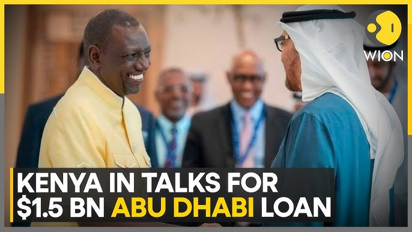
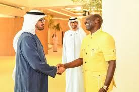
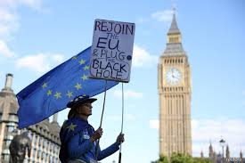

FINANCE

KENYA IN TALKS FOR A $1.5 BLN COMMERCIAL LOAN WITH UAE, FINANCE MINISTER SAYS
NAIROBI, Oct 16 (Reuters) - Kenya is in discussions with the United Arab Emirates for a $1.5 billion commercial loan with
an 8.25% interest rate and a seven-year tenor, Finance Minister John Mbadi said on Wednesday.
The East African nation is seeking to diversify its sources of financing after deadly protests forced the government to abandon a slate
of tax hikes and delayed disbursements from the International Monetary Fund (IMF). Reuters reported the prospective loan last month.


KENYA IN TALKS FOR A $1.5 BILLION COMMERCIAL LOAN WITH UAE, FINANCE MINISTER SAYS
Kenya is currently engaged in negotiations with the United Arab Emirates (UAE) for a significant commercial loan amounting to $1.5 billion. This development comes as part of Kenya's broader efforts to secure financing to support its economic initiatives and bolster its fiscal stability.
The Finance Minister emphasized the importance of this potential loan in addressing various pressing financial needs, including infrastructure development and public services. This collaboration with the UAE highlights Kenya's ongoing commitment to fostering international partnerships to enhance economic growth and resilience.
As discussions progress, the Kenyan government aims to ensure favorable terms that will benefit its economy while maintaining sustainable debt levels. The outcome of these talks will be closely monitored, as it could have far-reaching implications for Kenya's financial landscape and development agenda.
BREXIT 'DISASTER' COST LONDON 40,000 FINANCE JOBS, CITY CHIEF SAYS
LONDON, Oct 16 (Reuters) - Britain's departure from the European Union cost London's financial centre about 40,000 jobs, the Lord Mayor of the City of London told Reuters, a far deeper impact from Brexit than previous estimates.
Michael Mainelli said Dublin had gained most, attracting 10,000 positions, while cities such as Milan, Paris and Amsterdam had also benefited from jobs migrating from London after Britain voted to quit the EU trading bloc in 2016.

Michael Mainelli said Dublin had gained most, attracting 10,000 positions, while cities such as Milan, Paris and Amsterdam had also benefited from jobs migrating from London after Britain voted to quit the EU trading bloc in 2016.
"Brexit was a disaster," said Mainelli, the ceremonial head of London's City financial centre, which stretches over a square mile including the Bank of England, international banks and insurers. "We had 525,000 workers in 2016. My estimate is that we lost just short of 40,000."
The tally by Mainelli, who spent years charting the fortunes of Britain's financial centre before becoming Lord Mayor and has contact with hundreds of City firms, is far higher than the 7,000 jobs that consultants at EY calculated had left London for the European Union by 2022.
But he said the City of London was growing, including in fields beyond finance, with new jobs that compensated for the fallout of Brexit. Worker numbers have swelled to 615,000 as insurers and data analysis sectors grow, he said.
Advt
Nonetheless, his estimate underscores the scale of the fallout, as Britain seeks to rebuild bridges to continental Europe.
"The City voted 70-30 to remain. We did not want it," Mainelli said, adding that he had redoubled his efforts to "engage more" with Europe, making nine visits to countries in the region this year.
His push to bolster relations with the continent comes amid a wider economic slowdown in Britain, which has been riven by disagreement over its departure from the European Union.
Although some hoped that Brexit would give London the freedom to reduce immigration, ditch large amounts of EU regulation and bolster the economy, immigration rose, regulation proved hard to untangle and the economy slowed.
Keir Starmer, Britain's new prime minister, has sought to rebuild relations with continental Europe, damaged by years of fractious Brexit negotiations.
Starmer wants to remove some blocks to doing business with EU countries, including a mutual recognition agreement of professional qualifications, but has ruled out a return to the bloc's single market.
Mainelli said "there's a lot more we could do on visas" to help the City. "We're also working on bilateral trade deals with Germany," he said.
Long the jewel in the British industrial crown, the country's financial sector has also been in decline.
Economic output in the heart of Britain's financial sector, including banks and wealth funds, has fallen by more than 15% since late 2019, just before the UK formally left the EU.
Overall, financial services output in Britain has fallen by 1% since late 2019 - a stark contrast with France and Germany, where it has increased by 8%, and Ireland's 18% growth, national account data shows.
British financial services exports have been overtaken by other business services, such as law or advertising.
Britain's official budget forecaster said in March that its prediction Brexit would cause trade volumes to shrink by 15% was "broadly on track".
Most Britons think Brexit has been a failure so far, according to recent opinion polls, but proponents say Britain has greater freedom to pursue its own path outside the EU. They point to Germany's economic downturn and political turmoil in France as evidence of the bloc's shortcomings.